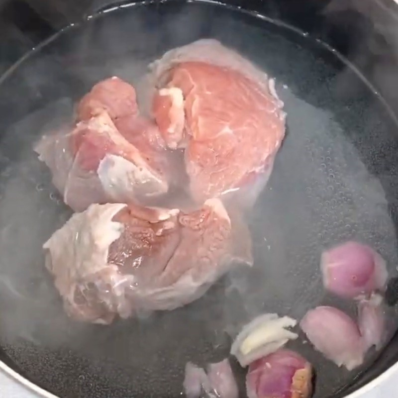
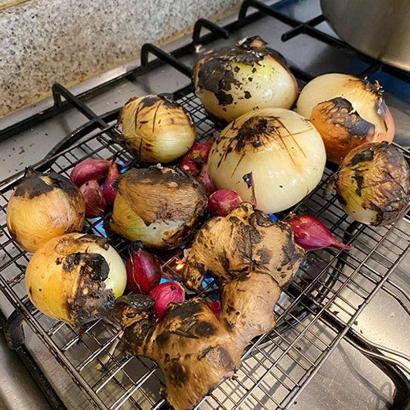
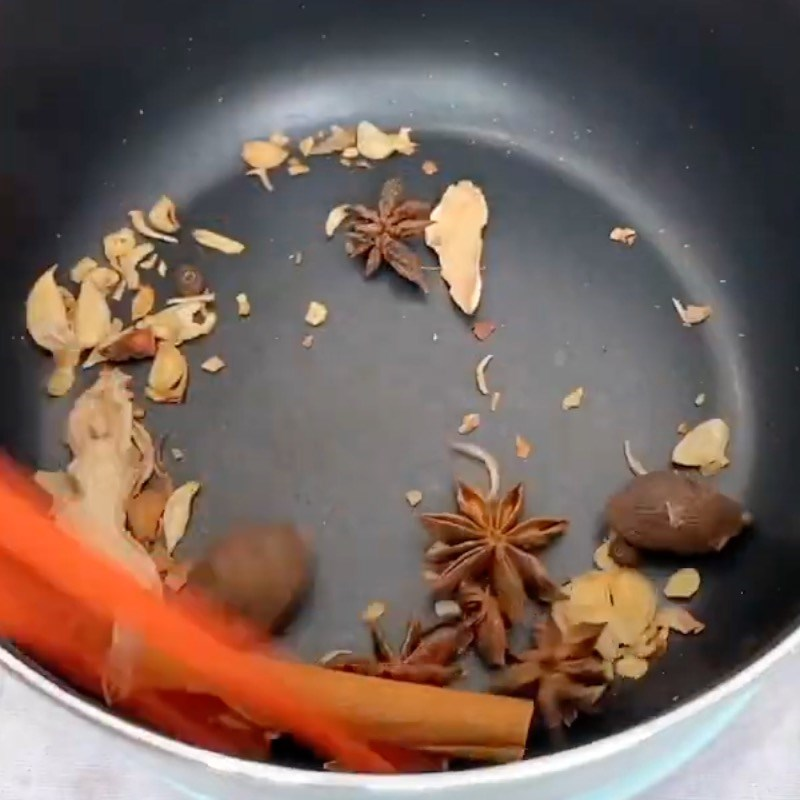
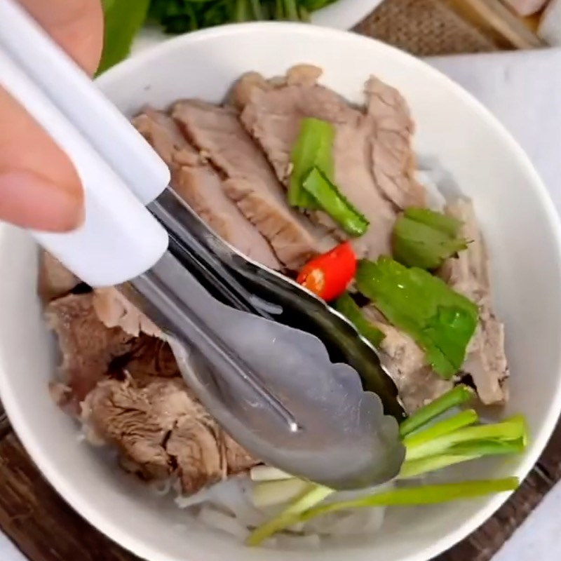
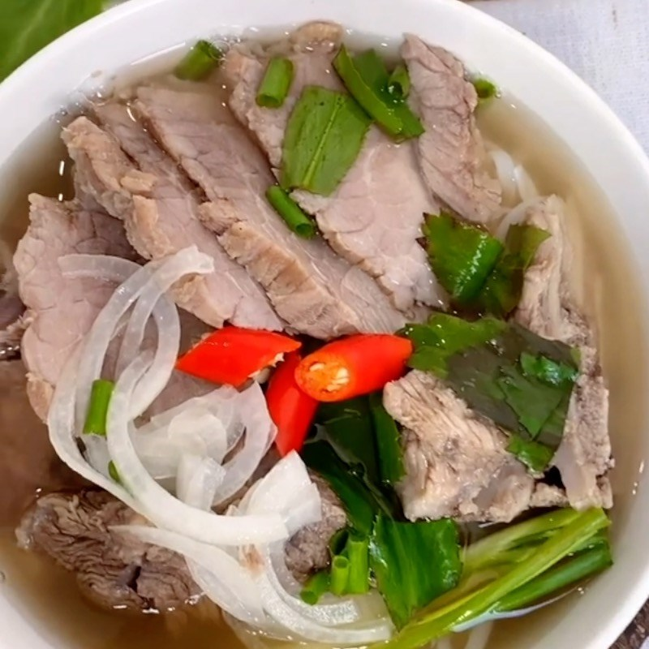

Nguyên liệu
- 500g thịt bò mềm, thái thành lát mỏng
- 300g phở khô
- 1 hành tây, thái lát mỏng
- 2 tép tỏi, băm nhỏ
- 1 gói gia vị như tỏi, ớt, đinh hương, nghệ, hành tây, đinh hương, đinh hương, đinh hương, đinh hương, đinh hương, đinh hương, đinh hương, đinh hương, đinh
Các bước
-
Sơ chế và trần thịt
Bạn bắc lên bếp 1 nồi nước và cho vào nồi hành tím đã đập dập rồi nấu trên bếp ở nhiệt độ cao.
Khi nước sôi, bạn cho thịt bò và xương heo đã sơ chế vào và chần khoảng 3 phút để loại bỏ mùi hôi. Sau đó, bạn vớt thịt ra và cho ngay vào tô nước lạnh.
Thịt bò sau khi sơ chế và trần
-
Sơ chế các nguyên liệu khác
Hành tím mua về bạn lột vỏ 3 củ, sau đó rửa sạch và đập dập, 2 củ còn lại thì rửa sạch và để ráo.
Hành tây cắt bỏ rễ, và rửa sạch. Bạn rửa sạch gừng và để ráo.
Nướng hành tây, 2 củ hành tím và gừng trên bếp khoảng 2 phút đến khi dậy mùi thơm.
Bạn cho phần gia vị nấu phở bò vào chảo và rang trên bếp ở nhiệt độ trung bình nhỏ trong 4 phút đến khi dậy mùi thơm. Cho các gia vị vừa rang vào túi lọc có sẵn và cột chặt miệng túi lại.
 Nấu nước dùng
Bạn cho vào nồi 1.5 lít nước cùng thịt bò và xương heo đã chần rồi đậy nắp lại, hầm trong 1 tiếng. Trong lúc hầm nước dùng, bạn thường xuyên mở nắp nồi và hớt sạch bọt để nước dùng được trong hơn.
Khi nước sôi, bạn cho hành tây, hành tím, gừng đã nướng thơm và túi gia vị nấu phở đã rang vào nồi.
Tiếp theo, bạn thêm vào nồi 2 muỗng canh đường phèn, 2 muỗng cà phê muối, 1.5 muỗng cà phê bột ngọt, 1.5 muỗng cà phê hạt nêm rồi khuấy đều, nêm nếm lại gia vị cho vừa ăn và nắp lại 3 phút rồi tắt bếp là hoàn thành.


Hoàn thành
Bạn vớt thịt bò trong nồi nước dùng ra và cắt thành những lát vừa ăn.
Sau đó, cho bánh phở ra tô, xếp thịt bò lên trên rồi chan nước dùng và thêm ít ớt cắt lát, rau ăn phở như ngò gai, hành lá,...
Thưởng thức
Vậy là tô phở bò nấu từ gói gia vị phở chỉ với vài bước cơ bản đã hoàn thành.
Chúc bạn ngon miệng
